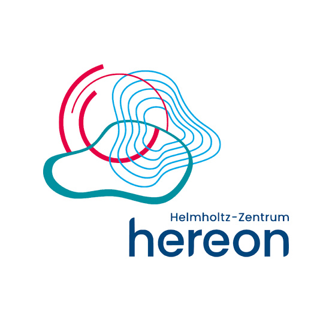

HER08/2026 – est. 08/2030
Wissenschaftliche Mitarbeiterin
Helmholtz-Zentrum Hereon, Geesthacht (GER)
Assessing marine carbon dioxide removal (mCDR) approaches through analysis of air–sea CO2 exchange measurements, and evaluating feasibility, efficiency, environmental impacts and monitoring, reporting and verification (MRV) strategies within the MAR-CO2 project.
50% until 12/2026, in parallel with GEOMAR; full-time thereafter